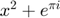
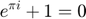

%fclose(instrfind()) % delete(instrfind()) s=serial('COM4','BaudRate',38400); s.Terminator = 'LF'; s fopen(s); datalist=[]; RTD=[]; IR_amb=[]; IR_OBJTOT=[]; IR_OBJ1=[]; IR_OBJ2=[]; DUTY = []; READING = []; MEAS = []; ALFA = []; MILLIS = [];
Serial Port Object : Serial-COM4
Communication Settings
Port: COM4
BaudRate: 38400
Terminator: 'LF'
Communication State
Status: closed
RecordStatus: off
Read/Write State
TransferStatus: idle
BytesAvailable: 0
ValuesReceived: 0
ValuesSent: 0
Error using serial/fopen (line 72)
Open failed: Port: COM4 is not available. Available ports: COM3.
Use INSTRFIND to determine if other instrument objects are connected to the requested device.
Error in Serial_read (line 6)
fopen(s);


COUNTER = 0; while 1 COUNTER = COUNTER +1; Dataline=fgetl(s); %reads "Ready" a = string(Dataline(1:end-1)); disp(a) b= strsplit(a,','); if size(b,2)>1 for j=1:2:size(b,2) if b(j) == 'alfa' ALFA=[ALFA, str2num(b(j+1))]; elseif b(j) == 'millis' MILLIS=[MILLIS, str2num(b(j+1))]; elseif b(j) == 'duty' DUTY=[DUTY, str2num(b(j+1))]; elseif b(j) == 'reading' READING=[READING, str2num(b(j+1))]; elseif b(j) == 'meas' MEAS=[MEAS, str2num(b(j+1))]; elseif b(j) == 'RTD' RTD=[RTD, str2num(b(j+1))]; elseif b(j) == 'IR_amb' IR_amb=[IR_amb, str2num(b(j+1))]; elseif b(j) == 'IR_OBJTOT' IR_OBJTOT=[IR_OBJTOT, str2num(b(j+1))]; elseif b(j) == 'IR_OBJ2' IR_OBJ2=[IR_OBJ2, str2num(b(j+1))]; elseif b(j) == 'IR_OBJ1' IR_OBJ1=[IR_OBJ1, str2num(b(j+1))]; end end end end fclose(s); delete(s);